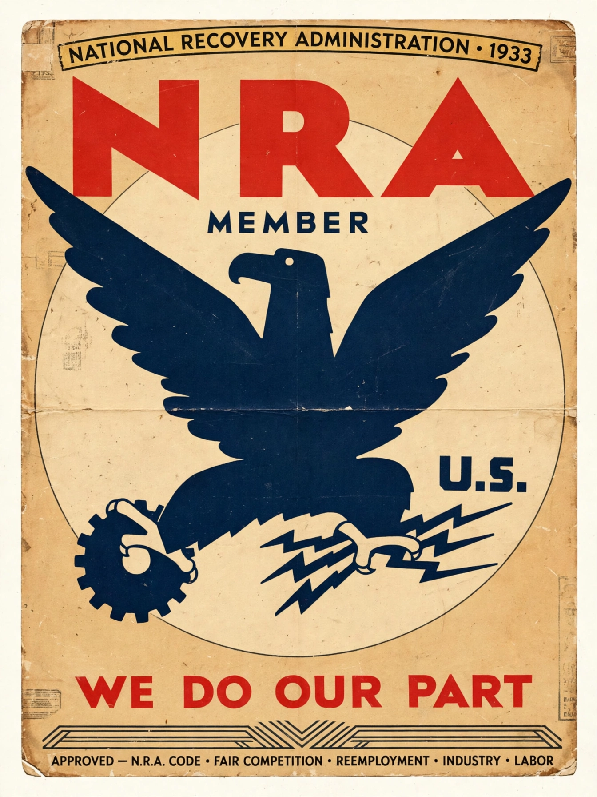

From Wikipedia, the free encyclopedia
| Enacted by | 73rd United States Congress |
|---|---|
| Signed | June 16, 1933, by President Franklin D. Roosevelt |
| Status | Declared unconstitutional in A.L.A. Schechter Poultry Corp. v. United States (1935) |
| Agencies created | National Recovery Administration; Public Works Administration |

The National Industrial Recovery Act of 1933 (NIRA) was a US labor law and consumer law passed by the 73rd US Congress to authorize the President to regulate industry for fair wages and prices that would stimulate economic recovery. It also established a national public works program known as the Public Works Administration. A keystone of President Franklin D. Roosevelt's New Deal, the law was enacted during the Hundred Days of Roosevelt's first term.
Title I of the act created the National Recovery Administration (NRA), under General Hugh S. Johnson, which drew up industry-wide "codes of fair competition" that fixed prices and wages, established production quotas, and restricted competition. Section 7(a) guaranteed workers the right to organize and bargain collectively. Businesses displaying the NRA's Blue Eagle emblem signaled compliance. Title II created the Public Works Administration (PWA), headed by Harold Ickes, which funded large-scale infrastructure projects.
In May 1935, the Supreme Court unanimously declared the NIRA unconstitutional in A.L.A. Schechter Poultry Corp. v. United States, holding that Congress had improperly delegated legislative power and exceeded its authority under the Commerce Clause. Many of the act's labor provisions were later re-enacted in the National Labor Relations Act of 1935, and the PWA's work continued under other authority.